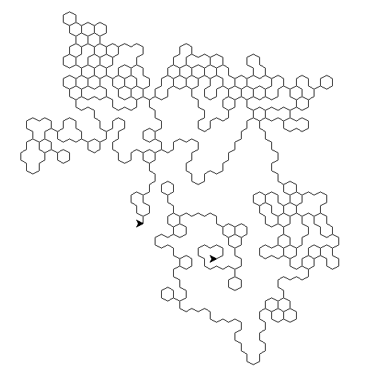
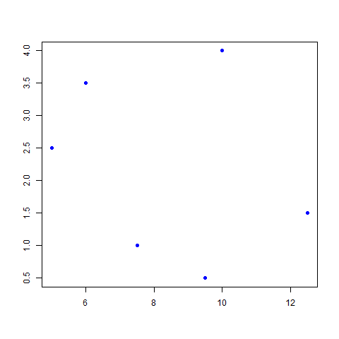
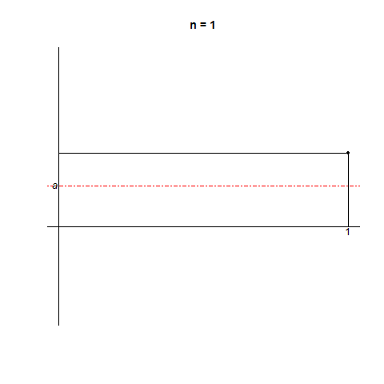

Hernán Ibarra Mejia

I am a BSc Maths student at The University of Sheffield. The above picture was taken in Edinburgh, during the LMS Summer School 2022.
Write-ups
Expository Articles
- Change of basis with commutative diagrams (pdf)
- Sp(1) and SO(3) (pdf)
- Introduction to Coxeter Groups (pdf) in progress
- Torsion classes and torsion theories (pdf) in progress
- The Kronecker quiver (pdf) in progress
Some solutions to Terence Tao's Analysis I
- Exercise 8.5.13. (pdf)
- Exercise 8.5.15. (pdf)
- Exercise 10.1.7 (pdf) (Proof of the Chain Rule).
- Exercise 10.4.3. (pdf)
Miscellaneous
Slides from talks
- Rigour and Automated Theorem Proving (pdf)
- Matrix Groups (pdf)
- A fun problem (pdf)
Code and animations
In Python
-
Random walks. Annie walks around an n-sided polygon, while Anthony walks in an infinite hexagonal grid, stopping when he returns to his starting point. Code for the illustration not included (lost it, unfortunately). (py)

In R
- Given an unordered list of points in R^2, this program orders them such that, when consecutive points are joined by a line, a polygon is formed. Later I learned that this search strategy is called backtracking. (Rmd)

- An animation illustrating why the Cesàro sum of a convergent sequence is its limit. (R)

In C
Battleship! (C)